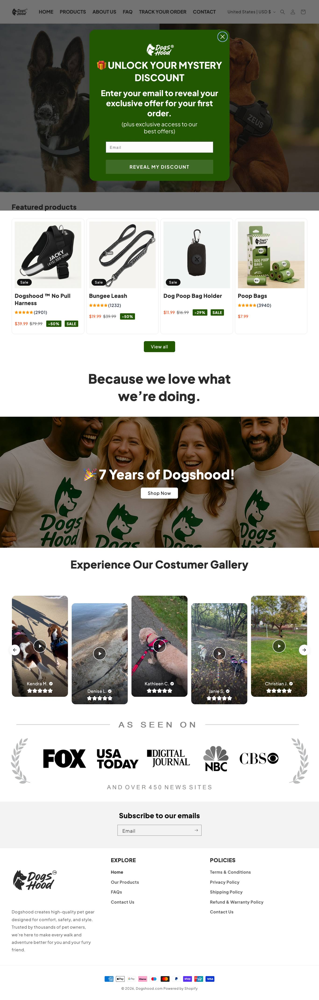
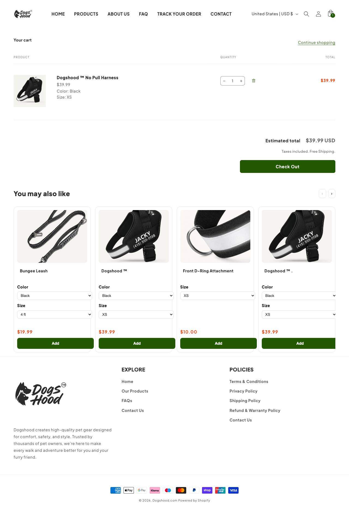

A maior operação dropship do nicho nos EUA: 425 mil visitas/mês, peitoral antipuxão 'com ajuste personalizado' a US$ 39,99. A mesma página (Tailo Dogwear) roda a loja irmã tailoharness.com. Muito Google Ads (200 anúncios). É o teto de referência, não o ponto de partida do iniciante.
dogshood.comativa desde 06/08/2025 (~14 meses, pelo catálogo); a loja irmã tailoharness.com abriu em 09/09/2026Plataforma: Shopify · tema próprio (repositório GitHub 'Validare') · Klaviyo, Loox, TikTok, GTM, Intelligems
nível 2 a 3: vídeo + texto longo em segunda pessoa que leva a "carta do fundador"; 200 anúncios no Google
Nota de contagem
Dogshood (128514970341968): 74 ativos, 101 no histórico [API 0/27 · Biblioteca pública 74/101]; Tailo Dogwear (1283880841480589): 492 ativos, 492 no histórico [API 0/0 · Biblioteca pública 492/492]; Happy Dog Walks (1308603385675580): 16 ativos, 16 no histórico [API 0/0 · Biblioteca pública 16/16]. Regra: maior valor por página entre a API oficial e a Biblioteca pública; a loja soma as páginas.
subindo. 425 mil visitas por mês, bounce de 40,7% e Tranco em alta (433.310, subindo), com uma loja irmã aberta há 7 semanas. Os criativos ativos têm só 15 dias: a operação renova a peça em vez de esticar uma só, então a longevidade não mede escala aqui. Série mensal de visitas: não obtida. inferido
Leitura da amostraOs anúncios atuais da Dogshood têm só 15 dias: a operação renovou os criativos; não dá para medir longevidade
BenchmarkBenchmark de custo da categoria: CPM US$ 14,19 (média geral Meta 2025; até US$ 24,50 em Vendas) · CPC US$ 0,61 a 0,96 (pet care, proxy fraco) · CPA US$ 38,19 (média geral; pet care US$ 15,29, proxy fraco). Fonte: Triple Whale 2025 e pesquisa web de 29/10/2026.
03Ranking de criativos vencedores
Criativo campeão: 15 dias no ar (o mais antigo da amostra desta loja).
Collar, harness, slip lead, gentle leader… If you've tried them all and your dog still pulls, here's what they have in common. Every one of them eithe
no ar há 15 dias · desde 15/10/2026
ativo
Prova do anúncio
Dogshood
If your shoulder hurts after walks, it isn't because you're not strong enough. Your leash clips to your dog's back, the one spot that makes them pull harder. Push on a dog's chest and they drive into it. Dogshood's clip sits high on the padded chest, so a pull turns them instead of loading up on you. 90 days to try it, risk-free 👇
não obtidoa Meta não publica gasto para e-commerce fora dos recortes regulatórios
O que isso prova
Que este anúncio está no ar há 15 dias e a página segue investindo no ângulo.
O que isso não prova
Escala, gasto, faturamento ou lucro.
Prova do anúncio
Dogshood
If your shoulder hurts after walks, it isn't because you're not strong enough. Your leash clips to your dog's back, the one spot that makes them pull harder. Push on a dog's chest and they drive into it. Dogshood's clip sits high on the padded chest, so a pull turns them instead of loading up on you. 90 days to try it, risk-free 👇
não obtidoa Meta não publica gasto para e-commerce fora dos recortes regulatórios
O que isso prova
Que este anúncio está no ar há 15 dias e a página segue investindo no ângulo.
O que isso não prova
Escala, gasto, faturamento ou lucro.
Prova do anúncio
Dogshood
Collar, harness, slip lead, gentle leader… If you've tried them all and your dog still pulls, here's what they have in common. Every one of them either can't stop the pulling, or stops it by hurting your dog. Dogshood's strap sits on the padded chest and does both, no pulling, no pain. 90 days to try it, risk-free 👇
não obtidoa Meta não publica gasto para e-commerce fora dos recortes regulatórios
O que isso prova
Que este anúncio está no ar há 15 dias e a página segue investindo no ângulo.
O que isso não prova
Escala, gasto, faturamento ou lucro.
Ordem por dias no ar (o mais antigo ainda ativo é o vencedor mais provável): 15 dias ↗ · 15 dias ↗ · 15 dias ↗. Longevidade do campeão: 15 dias.
04Tráfego
425K
visitas mensais
SimilarWeb 10/2026
observado · SimilarWeb 10/2026
112.620
rank global
rank no país: 24.502
observado
40,7%
bounce
2,98 páginas por visita · duração 2:22
observado
EUA 88,5%, Canadá 7,1%
países de origem
Tranco 433.310, subindo
observado
TráfegoSérie mensal de 3 meses: não obtidoo gráfico do SimilarWeb não expõe os valores em texto. Split entre tráfego pago e orgânico: não obtidoSimilarWeb gratuito não separa.
05Faturamento e investimento
US$ 382.000
Faturamento mensal estimado (central)
visitas x conversão x ticket
inferido
US$ 287.000
piso da faixa
inferido
US$ 478.000
teto da faixa
inferido
não obtido
investimento em mídia/mês
a Meta não publica gasto de e-commerce fora da UE
observado
Confiança do faturamento
triangulado por visitas (SimilarWeb 10/2026) x conversão x ticket; faixa larga
Reviews
contagem não exposta (Loox)
NotaNão mostro ROAS: seria uma conta circular (gasto estimado a partir do mesmo dado).
06Páginas capturadas: home, PDP e carrinho
HOME

PDP · Dogshood™ No Pull Harness
CARRINHO

07Anatomia do vencedor
Camada
O que é
Big idea
Sua guia prende nas costas, o único ponto que faz o cão puxar mais. A argola no peito vira o cão de volta para você.
Mecanismo
reflexo de oposição: 'Push on a dog's chest and they drive into it'; argola alta no peito redireciona.
Gancho
'The No-Pull Harness That Turns Your Dog Around', 'The harness is hurting them.', 'Not All No-Pull Harnesses Are Built the Same' (comparação com cópia da Amazon)
Estrutura
imagem ou vídeo + texto longo em segunda pessoa, leva a advertorial ('easy-on', 'founder letter')
Objeção atacada
'já tentei de tudo' (coleira, peitoral, enforcador, cabresto) e 'peitoral machuca'
O que copiar e o que evitar
CopiarO argumento do reflexo de oposição explicado em linguagem simples, a comparação lado a lado com a cópia barata e a garantia de 90 dias.
Não copiarOperar 2 domínios, advertorial de 'carta do fundador' e Google Ads pesado: é operação de quem já tem caixa.
AchadoAchado: 6 anúncios da página Tailo Dogwear com destino dogshood.com anunciam "We're shutting down Dogshood" (disputa de marca com uma grande empresa do setor) e levam a uma carta do fundador. Pode ser troca de nome real para Tailo ou isca de liquidação: não verificado. Lição para o plano: conferir a marca antes de investir em nome.
08Oferta, stack e canais
Frete
não informado na home nem na PDP (a loja irmã mostra "Free Shipping Over $55")
Garantia
90 dias de devolução do dinheiro; trocas e devoluções grátis na loja irmã
Prazo de envio
não obtido: nem a home nem a PDP informam prazo
BNPL/parcelamento
Klarna na home; Klarna e Zip na PDP
Guia de tamanho
Size Guide na PDP
Tech stack
Shopify, tema próprio (repositório "Validare"), Klaviyo, Loox, TikTok, GTM, Intelligems
Pixel da Meta
não detectado no HTML público (o stack inclui TikTok e gtag; o pixel pode estar por GTM)
Redes sociais
nenhum perfil social linkado
09Dados não obtidos
Dado
Motivo
Consequência
Frete e prazo de envio
home e PDP não informam
frete tratado como "não informado"; não entra em conta de concorrente
Contagem de reviews
Loox sem contagem exposta no HTML
prova social não usada como base
Série mensal de visitas
o gráfico do SimilarWeb não expõe os valores em texto
momentum por rank, idade e abertura da loja irmã
Visitas da loja irmã (tailoharness.com)
SimilarWeb respondeu "sem dados"
tratada como parte da mesma operação; faturamento só do domínio principal
10Selos, scorecard e veredito
DROPSHIP DE MARCA
modelo (3 níveis)
inferido
MODELAR
veredito
recomendado
NÍVEL AVANÇADO
nível de execução (soma do scorecard: 4/12)
inferido
INDEFINIDO
defensabilidade
Média. Tráfego alto e bounce baixo (40,7%) sugerem marca lembrada, mas sem perfil social e com 2 lojas espelho.
inferido
Eixo do scorecard
Pontos (0 a 2)
Leitura
Sourcing simples
1
um peitoral, mas 66 variantes e 23 produtos
Ticket fecha sem escada complexa
1
US$ 39,99 no core, sets de US$ 62 a 87 puxam o ticket
Criativo simples de produzir
0
vídeo, advertorial de fundador e Google Ads pesado
Mecanismo com urgência
1
dor física (puxar), mas o mecanismo é explicado, não sentido
Investimento de entrada baixo
0
duas lojas e 200 anúncios no Google: operação com caixa
Sem dependência de autoridade de marca
1
vende no argumento, mas depende de marca lembrada (bounce 40,7%)
Soma
4/12
10 a 12 iniciante, 6 a 9 médio, 0 a 5 avançado
Gate de nichodogshood.com foi conferida no catálogo: o produto campeão é Dogshood™ No Pull Harness, da categoria do nicho.